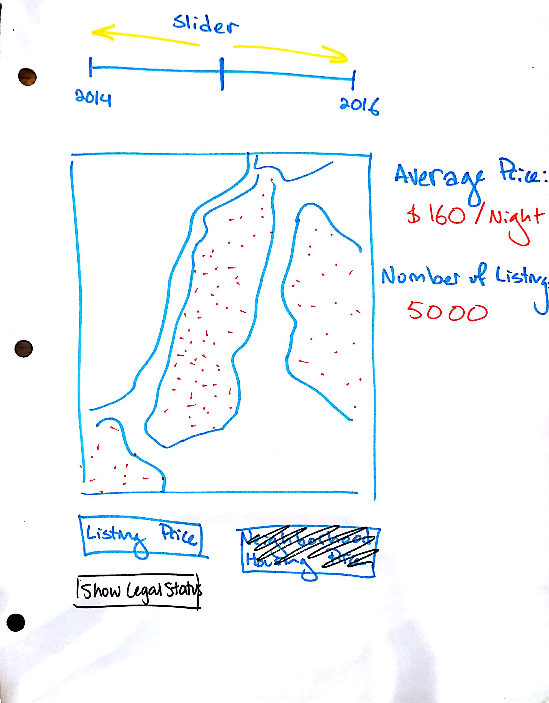
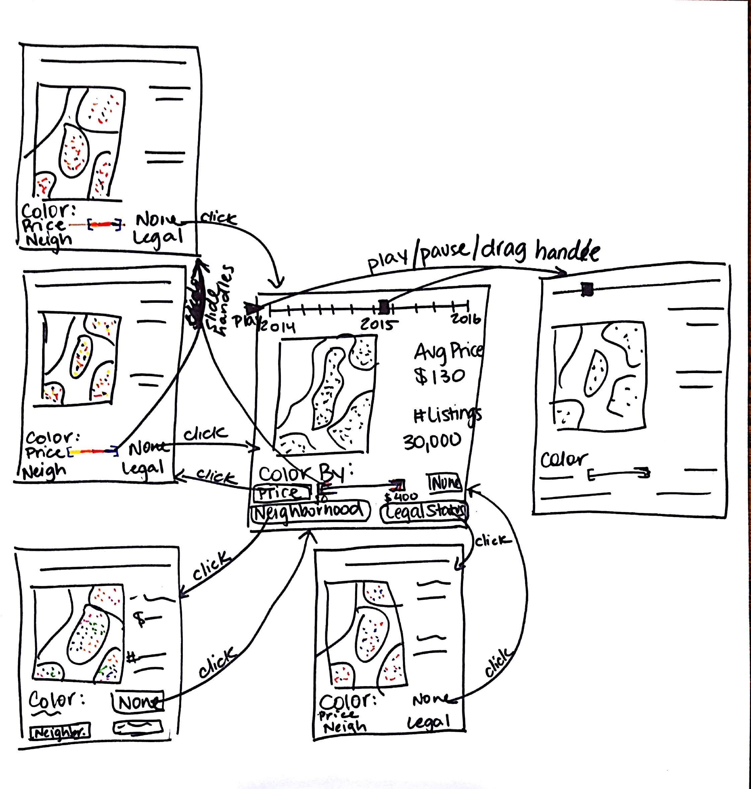
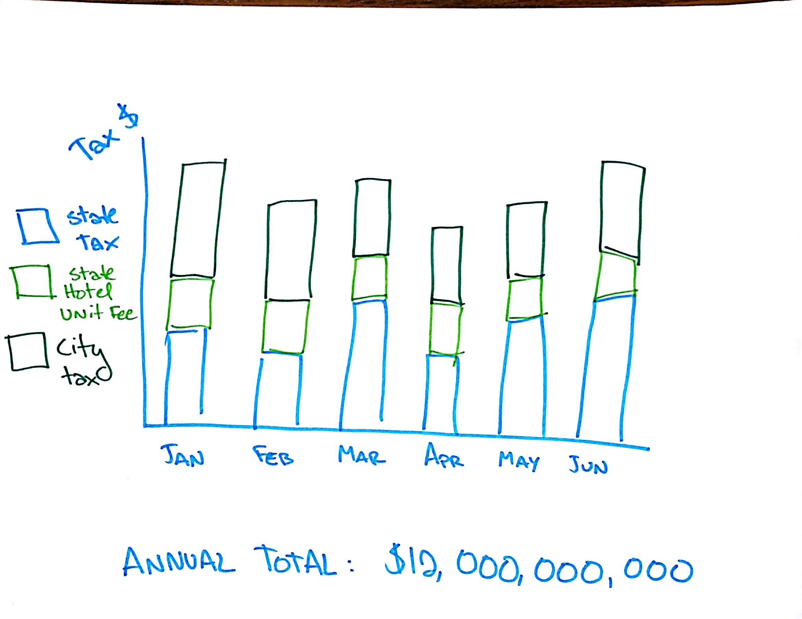
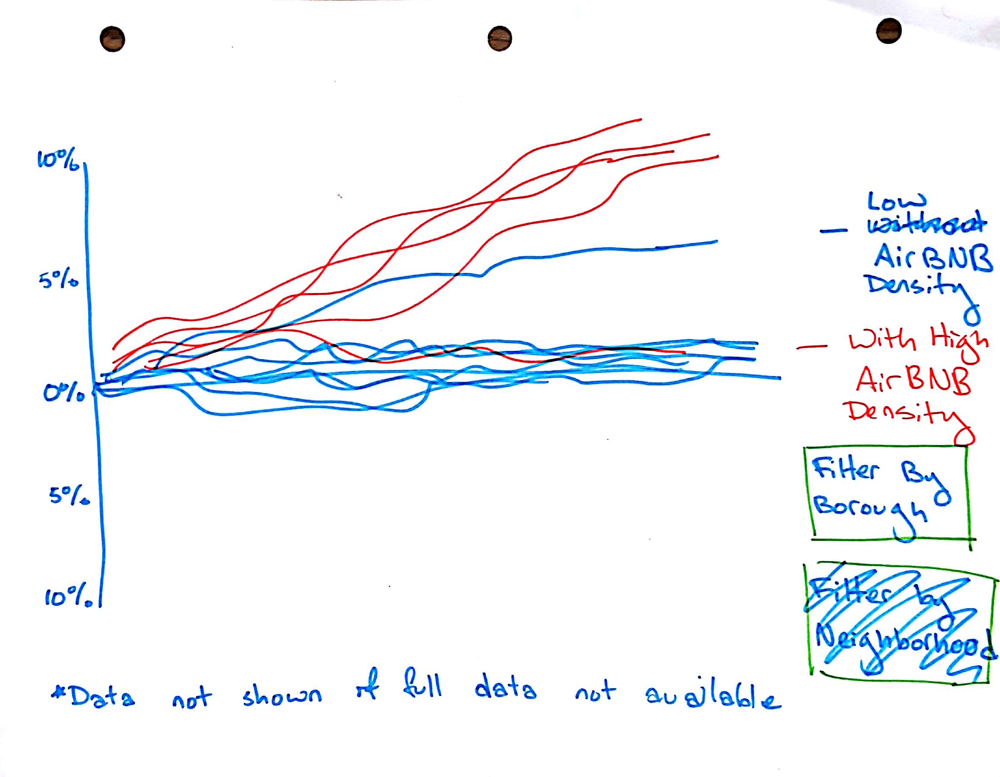
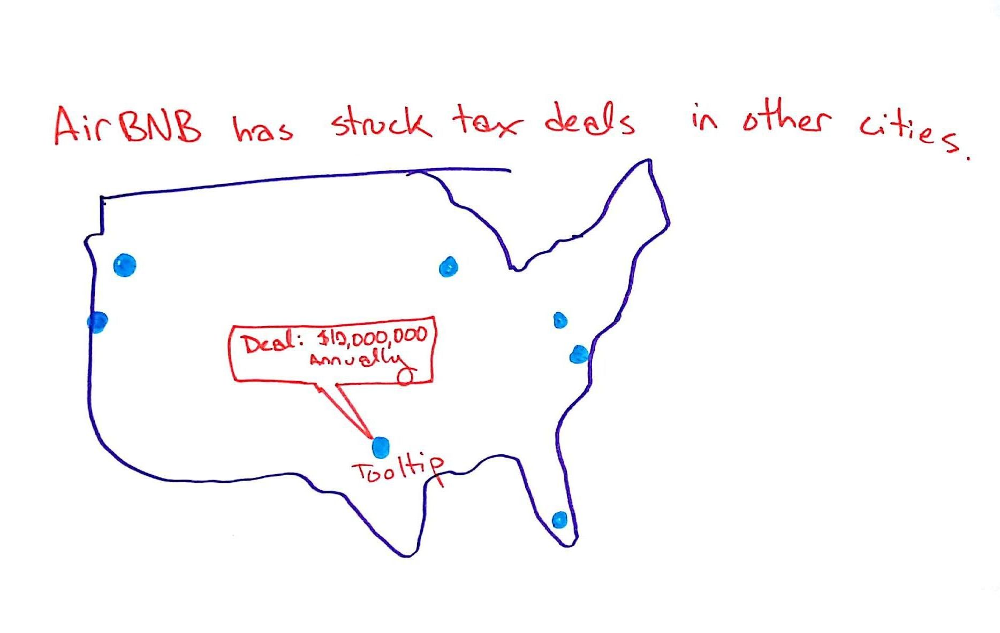
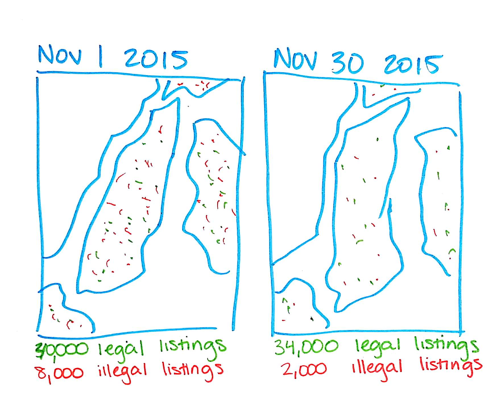
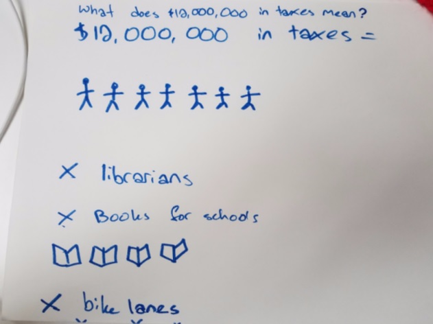

Process Book
Project Proposal - Oct. 31
This summer, the NY state senate passed a bill to fine the hosts of certain Airbnb rentals in New York City. However, the governor of NY has yet to sign the bill. We’d like to present a website showing the context surrounding this controversial issue by showing both the prevalence of Airbnb rentals as well as the state of the housing rental market. We’ll show changes over time as well as trends by neighborhood or borough. We’ll also show the effects of illegal Airbnb rentals on lost hotel tax revenue and increased prices of standard rentals.
We’ll collect data from several online sources including insideairbnb.com and tomslee.net/airbnb-data. Both of these websites have scraped data from the Airbnb website directly at different time intervals. We’ll also download Zillow’s publicly available dataset of median rental prices in NYC. Finally, the Bureau of Labor Statistics provides a consumer price index, and we will incorporate their data from 2006 until now to adjust for inflation.
Project Plan - Nov. 7
Goals and Tasks
-
General goal: Explain the legal controversy and context surrounding a bill that has been passed in NYC to regulate Airbnb rentals.
-
Visualize Airbnb listings over time (allow users to explore several variables)
We want to give the users the tools to interact with our data on Airbnb postings. To this end, we’ll create a map with a slider that allows the user to show postings from a given map. They’ll also be able to select various attributes to color the posting dots (e.g., by price, neighborhood, etc). This will allow users to understand how Airbnb has grown in NYC in the last two years and also frame our discussion of its relationships with housing prices as well as lost tax revenue.
-
Show relationships between Airbnb density and housing prices in NYC
Over the last several years, Airbnb listings in NYC have dramatically increased. In some areas, the cost of housing has increased as well. We want to show the rise in housing prices in NYC neighborhoods over time as a function of Airbnb density. We will use a line chart with each line representing a NYC neighborhood. The x-axis would be time (monthly from 2014 until 2016), and the y-axis would represent the percent change in Zillow Rental Index (see their methodology here) from our starting date. The lines would each be colored by the density of Airbnb postings in the neighborhood (which we will determine based on the number of residential units, calculated from data provided by the PLUTO dataset from the NYC department of city planning). The user will see a general relationship between Airbnb densities and housing price increases across NYC. They’ll also be able to filter the neighborhoods and hover over lines to identify neighborhoods with high Airbnb densities and Zillow Rental Index increases. Finally, we’ll toggle between a view of general Airbnb density and illegal Airbnb density to show the user whether it is the illegal Airbnb listings in particular that are closely related to housing cost increases.
-
Estimate lost tax revenue
Hotels in NYC must pay 3 types of hotel tax: state sales tax, city sales tax, and a base fee per room per night. Originally, Airbnb claimed that it was only a platform and, as such, individual hosts were responsible for reporting and paying tax on their Airbnb rental revenue. However, most hosts don’t report or pay those taxes. Using the nightly price for Airbnb’s over time and an estimate for how often listings are actually reserved, we can estimate the amount of tax revenue that each host would have to pay. Then, we can show how the lost tax revenue has changed over time and produce a final amount of total amount of revenue lost over the past 2 years.
-
Show tax deals and other conflicts between Airbnb and other cities in the USA
This visualization will show context surrounding conflicts between cities and Airbnb regarding tax revenue. On a map of the United States, we’ll have markers of cities that have made deals with Airbnb as well as cities with ongoing lawsuits (e.g. San Francisco). The user will be able to hover over these cities to see details of resolutions or ongoing conflicts.
Description of Data
We have collected data from several online sources including insideairbnb.com and tomslee.net/airbnb-data. Both of these websites have scraped data from the Airbnb website directly at different time intervals. For each listing, variables include latitude and longitude, price per night, description of the space, neighborhood, borough, host information, number of rooms, etc. We have also downloaded Zillow’s publicly available dataset of median housing rental prices in NYC, which breaks data down by neighborhood. We have collected data from the NYC Department of City Planning land use and geographic data on the number of housing units per neighborhood, from which we can calculate the density of Airbnb listings. Finally, the Bureau of Labor Statistics provides a consumer price index, and we will incorporate their data from 2006 until now to adjust for inflation.
We still need to collect data on tax deals Airbnb made with other cities, which we will be able to collect by researching news reports on such deals.
We also need to analyze the data in two ways:
- Estimate which listings are illegal based on number of listings per host, host location, minimum nights to book, and type of property (and other variables if needed).
- Estimate amount of lost tax revenue based on nightly prices and a model for how often Airbnb’s are booked (there are models for this online so we need to pick one that works).
Project Timeline
-
11/7: Project Proposal Due
-
11/14: Project Prototype 1 Due
Deliverables:
- Skeleton of website and one functioning visualization: Morgan and Michaela
- Complete necessary assumptions and calculations to produce analysis - Alena
- Cleaned data - Nicasia
- Draft 1 of copy - Morgan
- All team members make Github accounts and become familiar with using it
-
11/28: Project Prototype 2 Due
Deliverables:
- All visualizations functioning and partially interactive
- Draft 2 of copy
- Final website layout
-
12/12: Final Project Due
Deliverables:
- All visualizations functioning and fully interactive
- Copy finalized
Feature List
Must-Have
- Map with Airbnb listings as nodes in NYC, showing change over time
-
Line chart of percent increase in housing prices in certain neighborhoods
- Highlight neighborhoods with some threshold density of Airbnb listings: #airbnbs / #residential units
- Change in illegal listings before and after publishing a report about Airbnb in New York City (Nov 2015)
-
Bar chart of tax dollars “lost” over time due to Airbnb
- City tax dollars "lost"
- State tax dollars "lost"
Good-to-Have
- Cities across the US where Airbnb has made tax deals (with tooltips with details of the tax deals)
Team Roles
Within each iteration of webpage design, each team member will be responsible for taking the lead and the following roles and making sure all related tasks are carried out:
- Target - Alena
- Data Wrangling - Nicasia
- Design - Morgan
- Implement - Michaela
- Evaluate - Alena
Initial Visualization Sketches - Nov. 7
Airbnb Listings Map
Airbnb Map Storyboard
Tax Dollars Lost Bar Chart
Housing Prices Line Chart
Airbnb National Deals Map
Airbnb Listing Deletions
Presentation in Studio - Nov. 8
After presenting our project proposal in studio, we received the following feedback:
- If we’re presenting this as the two sides of a debate, that should be reflected in the structure of the project, i.e. explicitly presenting the cases of both sides.
- We need to make sure we stay focused with our scope, and everything connects together. In order to do that, we're going to cut the visualization showing Airbnb deletions in Nov 2015, and the map of other cities. That way, we can stay focused on the newest law in NYC specifically.
Creative Visualizations from Lecture - Nov. 10
From earlier, we decided that our stacked bar chart showing lost tax dollars each month may be too dry and difficult for users to interpret. In order to help individuals better visualize and understand the amount of tax dollars lost.
One way we might orient the user to the amount of money lost may be to show how the money translates to the cost of public services offered by NYC. For example:
After designing this visualization, we decided that our drawing may be somewhat misleading because Airbnb taxes clearly would be divided and spent on various budgetary expenditures in both the city and state government. Therefore, it may make more sense instead to create a bar graph representing NYC’s budget broken up into different divisions (e.g., parks and rec) and then add a bar representing the lost tax revenue from Airbnb, so that users can compare this value to the various NYC budgets.
Project Meeting: Prototype V1 - Nov. 12
Meeting Notes
- The skeleton of website looks good, but we should amend the navigation links to stick to the top of the page.
- Morgan will take a stab at designing a header image.
-
How to figure out legality and taxes:
- Alena figured out what the laws are and put together a plan to calculate it, and wrote code snippets to do so.
- We will write an Assumptions/Estimates document to include on the website.
- Assumption: Supply and demand of Airbnb listings will not change based on imposition of taxes.
- Issue for prototype of visualization: There is so much data that the web page is crashing before it loads
-
Reconsidering visualizations:
- Swap out the second map for a sankey diagram showing breakdown of legal and illegal listings. Alena found a plugin that produces them. This will help readers understand what makes something illegal, and the quantity of illegal listings.
- Consider swapping bar chart of taxes over time with bar chart putting NYC tax revenue in context of other budget items.
-
For the map visualization:
- Cut the priceband slider
- Give context to issues coming up in the written introduction so the map makes sense. (Basically, you shouldn’t be running a hotel out of your house.)
- Implement neighborhood-level zoom, through a dropdown or by clicking on the neighborhood.
Visualization Sketches
First map visualization (revised)

Contextualized Taxes Bar Chart

Sankey Diagram

Sankey Storyboard

Tasks for Upcoming Week
-
Morgan
- Header Image
- Comparison tax bar graph
- Template for line graph (everything except coloring by density)
-
Alena
- Implement Sankey diagram with dummy data
-
Nicasia
- Finish data cleaning for one data set - Monday
- Finish getting data by next meeting
-
Michaela
- Keep working on Vis 1 - Monday
Legality and Tax Methodology
While this was originally part of our process book, it has been moved to the methodology page.
Feedback in Studio - Nov. 15
- Incorporate coordinate views into Viz 1, like an area chart of the amount of Airbnb listings over time.
- Use color scale for proportion of Airbnbs per neighborhood to unclutter Manhattan.
Prototype V2 Updates - Nov. 18
Status
-
Sankey Diagram (Alena)
- The plug in is not helpful, so we decided to create the Sankey diagram from scratch. This means hard-coding more layout information than is ideal, but at least the layout will be easily interpretable by the user.
- The Sankey diagram is now properly laid out, but the colors aren’t ideal and the labels are a mess. We need to decide how best to label it so it’s informative but also readable.
- Also animating it to make the decision flow clear would be great; we need to add the animations.
-
Data Wrangling for our Airbnb data (to be displayed on a map) (Nicasia)
- Data wrangling is now complete.
- We have cleaned data for each scrape date. For data from InsideAirbnb, we have calculated projected lost tax revenue, and have also classified whether or not that posting is likely to be illegal (this process was explained in an earlier section).
- For data from Tomslee, we have extrapolated legality estimates based on whether the posting occurs in other scrapings; however, we will not be calculating taxes because this would require too much guessing about missing data.
-
Rental Prices in different Neighborhoods Line Chart (Nicasia)
- Alena previously gathered estimates for median rental prices of neighborhoods in NYC from Zillow, and then adjusted them for inflation based on the US Bureau of Labor Statistics.
- We’d like to give users the option to color each line (representing one neighborhood) by the following: density of Airbnbs, density of illegal Airbnbs, percentage of Airbnbs that we think are illegal. For the first two options, we need a standard by which to determine density. We have decided to use (#Airbnb postings on a given date)/(# of total residential units). To that end, we acquired the PLUTO dataset from NYC’s public website regarding geographical land use, mapped each building to neighborhoods, and calculated the total number of residential units across these buildings.
- We now have a rudimentary line graph that is colored by percent of posts that are illegal. We will later add an option to color the lines by the other variables explained above, but unfortunately some of the calculations have produced some odd results (e.g., more postings than there are residential units in some neighborhoods). We also have a select box where the user can choose to display data only from one borough at a time.
-
Map Visualization (Michaela)
- We want to make the map more interactive, so that the user can view both the large-picture display of airbnb listings in New York as well as specifics for each neighborhood. Now the user can click to zoom in or out of a given neighborhood, and we will add coordinate views to visualize the data for each individual neighborhood.
- The user can now also color the listings (nodes) on the map by legality and price (or none if they just want to see the number of listings in New York City).
- We still have to add the coordinate views, and edit the map’s legend to reflect changes in node coloration.
Tasks
Morgan
-
Timeline
- Make timeline full width and centered.
- Putting the dates on the outsides of the circles.
- Add single tick for January 1st for every year on the axis to orient the viewer.
- Link each image to a news article giving more detail.
-
Layout
- Images cover the fixed menu bar when scrolling. Fix this by moving the html for the menu bar to the bottom of the index page.
-
Budget bar chart
- Move the select boxes to align right for a neater look.
- Convert data and implement a stack layout so that annual hotel revenue and projected Airbnb tax revenue are stacked bars.
- Add a legend.
-
Miscellaneous
- Get started on the coordinate views for the map.
- Redo header image so that it fills the whole screen.
- Implement fullpage.js so that scrolling shows a full section at a time.
Alena
-
Sankey Diagram
- Bars should show the category and number in that category.
- Add legend
- Clean up code
- Animate the sankey diagram to make the process of determining legality easier to understand and follow. Perhaps try delay functions with onclick handler. Use this example for inspiration.
Michaela
-
Map
- Densely populated neighborhoods are not zoomable because we can’t click over dots. Add a drop-down selection for borough zoom to solve this problem.
- Make tooltips show relevant information based on the selected category.
- Make legends nice using .nice()
- When zoomed into one borough, make other boroughs gray.
- Edit code to load each dataset separately
Nicasia
-
Data Wrangling
- Check with Michaela about what data to keep in json files (lat/long, legality, price, etc). Edit all jsons.
-
Line Graph
- Fix axes
- Implement toggle option for absolute price & percent change (calculated separately).
- Drop neighborhoods with weird values for density.
- Fix lines: implement tooltips, make selected line thicker, and/or make other lines gray.
- Tooltip should appear next to the mouse.
- Once these two are fixed, get rid of dots altogether.
- Use colorbrewer to get better colors.
- Get help for the lines appearing in the wrong spot.
Meeting with Mirhee - Nov. 30
Mirhee's Feedback
- Add white space and change scrolling so that each section has its own page, which can be done by implementing fullpage.js scrolling.
- Change carousel to smaller, clickable thumbnails
- Change the timeline’s beige background to white to look cleaner.
- For coordinate views for the map, have one view that shows an area chart of whatever variable is selected (legality, price, etc) and one view that shows rent prices in the selected zoom level.
Final Submission Update - Dec. 5
Remaining Tasks
Layout
- Make sure each page can fit into an actual page. (Everyone)
- For the title page, edit the header image so that scroll dots don’t overlap the title. (Morgan)
- Fill in the story on the sankey diagram and conclusion. (Alena)
- Fill in the explanation above rent linechart. (Alena)
- Write methodology of data sources, tax calculations, and listing legality. (Alena)
- Write methodology of posting density (and data sources thereof.) (Nicasia)
Carousel
- Change the image carousel from showing one image at a time to showing three images at a time.
- Delete captions under each image.
Map
- Fill in missing data (Michaela/Alena)
- Fix legend (Michaela/Alena): Prices should now be in the following groups: [0-50), [50,100), [100,150), [150-200), [200-300), [300, inf)
- Update tooltip values based on selected color listing (Michaela) → The map always lists price and room type.
- Implement neighborhood zoom
- Display only nodes in selected region (borough or neighborhood)
- The legend should be moved outside of the primary map svg so it doesn’t get covered. → Michaela added a box and white space for the legend.
- Make the slider update onchange using mouseup/mousedown, rather than having to click “Update map”. (Nicasia)
-
Coordinate views:
- Implement rent line graph (Nicasia) (mapLineGraph.js)
- Wrangle data for area chart (Nicasia)
- Implement area chart colored by selected category (Morgan)
- Add lines to the coordinate views that correspond to the slider date
- Change neighborhood select box so that it does not suggest neighborhoods with unavailable data.
Revised map sketch with coordinate views

Bar Chart
- Switch from dropdown select to toggle, and only toggle city or state, not year. (Nicasia)
- Differentiate colors between revenue, expenditure, and projections. (Morgan)
- Provide tax projections for city and state, 2016. (Alena)
- Fix enter/update/exit for stacked bar graph.
Sankey
- The middle panel animation skips through a part too quickly. (Alena)
- If you restart the animation after it ends the first time, the next button still says end. (Alena)
- Speed up transitions (Alena)
- Change data path to data/jsons_by_date/2016_10_whatever
Line Chart
- Make checkboxes more attractive and properly aligned (Alena)
- Fix percent scale legend
- The legend title needs to update when a different axis measure is selected (Alena)
- Format color variables need explanations (Nicasia)
- Change densities to "listings per 10,000 residential units" (Alena - actually did per 10,000)
- Fix x axis formatting (Nicasia)
-
Add info to tooltips (Nicasia) - round shown value; see about adding price stuff
- I also added the borough bc useful - Alena
Conclusion
- Needs to be written! - Alena
Final Tasks - Dec. 12
- Write conclusion
-
HTML.CSS
- Fix button:hover color
- Style video page
- Make Video
- Embed Video
- Finalize process book & put in html/css
- Clear out all commented code
-
Map
-
Make just 1 select box
- Check zoom/highlight
- Check coordinate views
- Fix legality coloring
- Fix price buckets
- Fix legend box
- Add ticks to slider? (optional)
-
Make just 1 select box
-
Methodology
- Add background colors
- Write in method & source of listing densities
-
Timeline
- Make links open in new tab
- Add "click me" instructions